Gemini supports several languages which our partners have translated. However, you can now easily manage these from within the Gemini interface itself. Here’s how.
The functionality referenced in this document requires Gemini 6.8.1 or higher
Go to: Customize > System > Languages
Firstly, you should, as an organisation, decide which languages are to be made available to your end users.
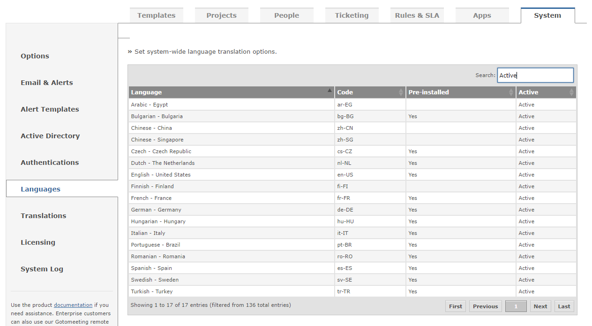
All languages can be displayed by removing the active search term, or replaced with the language term you required.
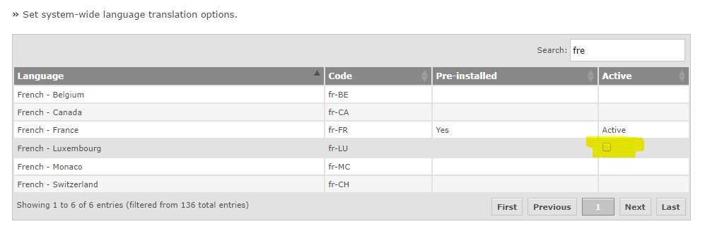
Click on the “Active” cell corresponding to the language to Activate or Deactivate this language.
When you activate a brand-new language, such as Chinese, or Arabic, you will get an English (US) version to translate as this is the default starting point. If you activate a variant of an existing language, such as French – Luxembourg, you will get the default, pre-installed French version as a starting point.
Please note that if you mark a language as inactive, this does NOT remove the translation from the system, you can make it active again and you will have the same translation as when it was made inactive.
Once a language is active, you can then amend the translation by visiting the Customize > System > Translations page within Gemini.
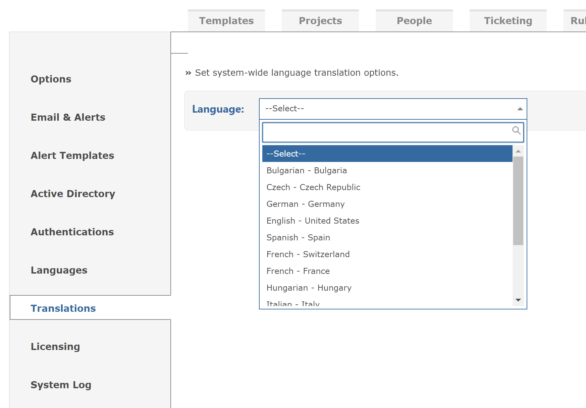
First, select the language. This list of languages is ALL the languages within Gemini, pre-installed and custom variations irrespective of the Active state of the language. This is so you can work on languages before releasing them to the end user.
Note For a new language, make it active, and then de-activate it. Now you can work on the translation before the end users can see it is available. Mark it as Active when finished.
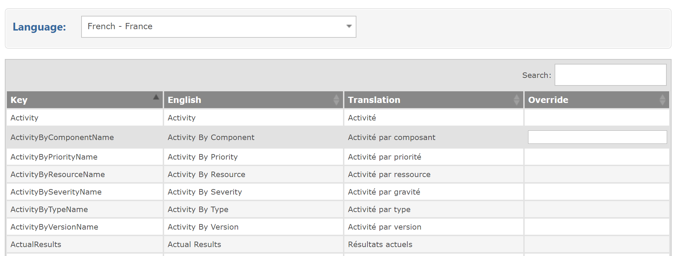
Then you can edit the value and amend the translation for the selected language.
For pre-installed languages, you cannot change the actual value, but can override the value. This is so you remain in full control of your translations and any update the pre-installed languages will not affect your installation.
For additional languages (not pre-installed) you can directly amend the language as you will have created it from scratch, or based upon the pre-installed version as shown:
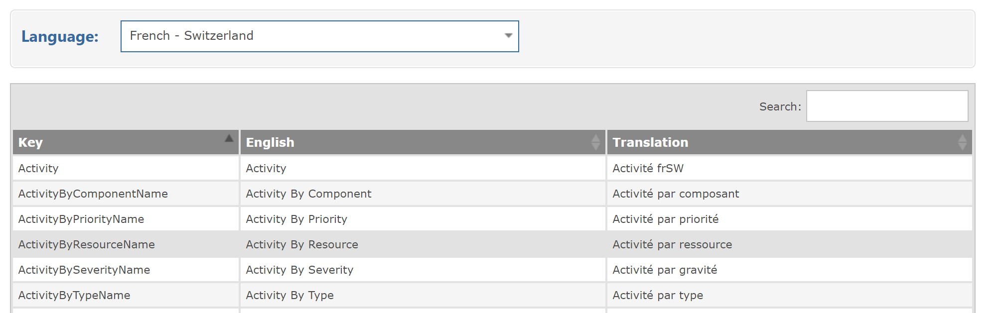
As of v6.8.1 you can now translate the custom field labels (before you could only translate the standard Gemini fields).
Navigate to Customize > Templates > Translation to view the translations page
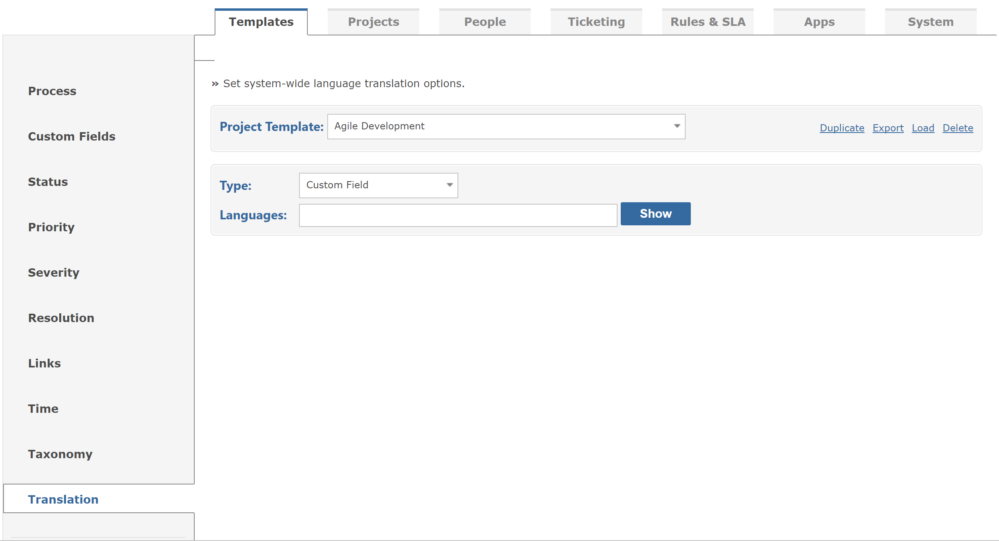
Select the template from which your custom field belongs. The type is Custom Field (others such as Status, Priority etc will be added in a later release) and is currently selected by default.
Enter which languages you wish to translate:
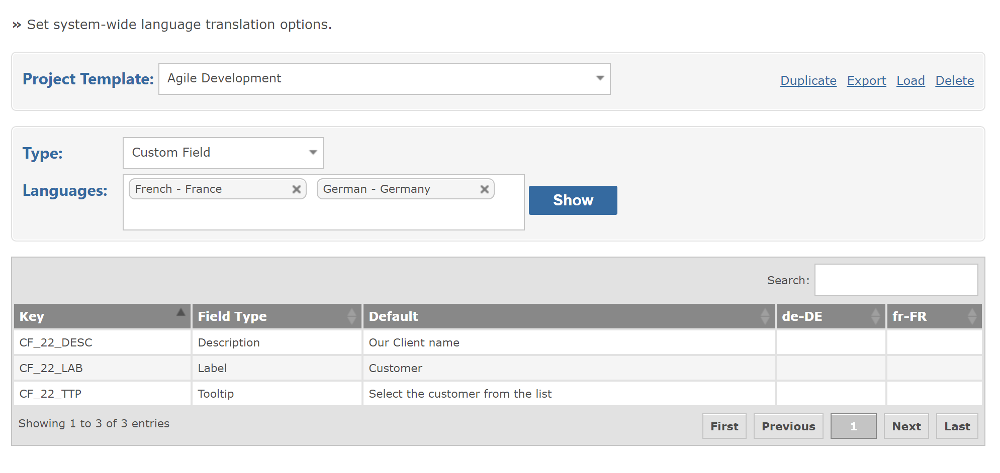
Then click in the table cell for the language and field required.
Key is the ‘translation code’ issued automatically to each custom field; useful for grouping fields together.
Field Type is the type of the field
Default is the value set when the custom field was created, and is the default used when there is no translation set.
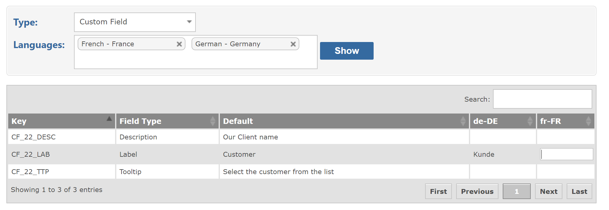
Sometimes, it is easier to translate, or amend the translation to the specific custom field. When editing (not creating) a custom field you can alter the translation values:
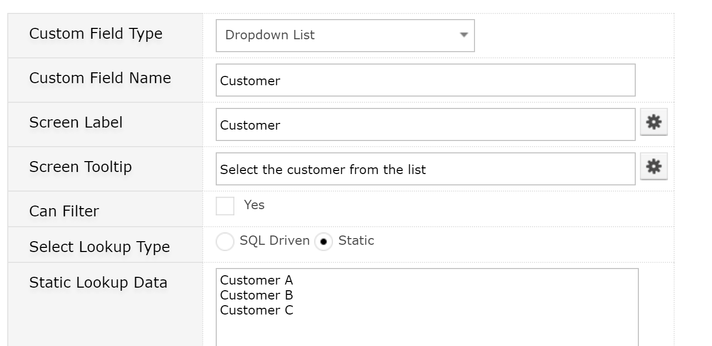
Click on the Cog next to the field and you can translate this value inline.
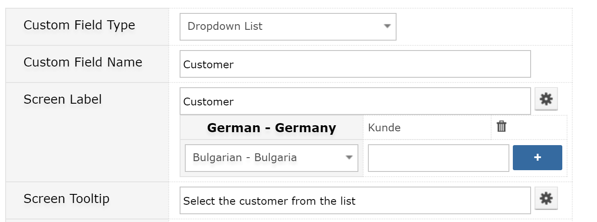
Select the new language, enter the translation and click the plus icon to add the translation. To amend the existing translation, click the translation value and edit inline. You can also remove a translation by using the bin icon.
Veto is a powerful tool part of the Rules and Action family in Gemini. If certain rules are met, then the action can be vetoed and a message displayed to the user. This can now be translated and shown in their selected language.
Go to Customize > Rules & SLA > Translation
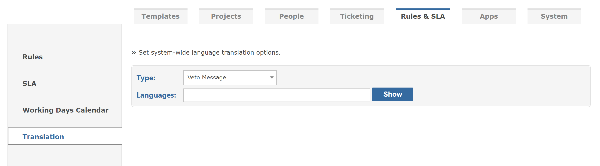
Similar to the Custom Field page, the only Type currently available is Veto Message. Select the languages required for translation and click the ShowM/b> button.Here is an illustration (Translations provided by Google Translate )
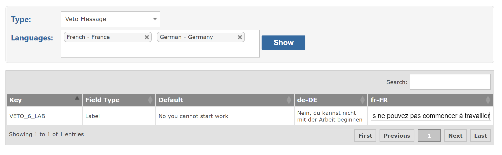